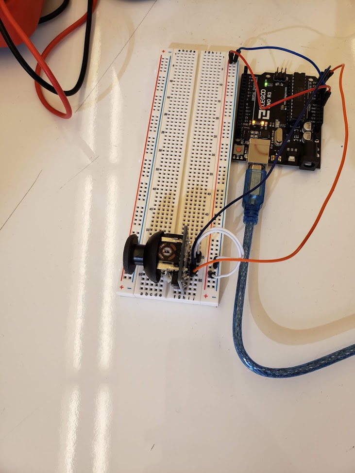

BACK
Assignment 5

This is the schematic for my circuit. It's fairly straight forward. The joystick has two potentiometers (x and y). The user moves the joystick around to change the value of the potentiometer.

This is my circuit. The joystick connects directly to the UNO board's power and ground. The X and Y potentiometer connections of the joystick are connected to the UNO board's A1 and A2. Simple like the schematic.
Firmware
//setup function
void setup() {
//serial setup
Serial.begin(9600);
}
//loop function
void loop() {
//defining s1 variable
int s1 = analogRead(1);
//defining s2 variable
int s2 = analogRead(2);
//serial making an array
Serial.print("[");
//putting s1 in serial array
Serial.print(s1);
// serial array
Serial.print(",");
//putting s2 in serial array
Serial.print(s2);
//closing serial array
Serial.println("]");
}
JavaScript
var serial; // variable to hold an instance of the serialport library
var portName = 'COM5' //rename to the name of your port
var dataarray = []; //some data coming in over serial!
var xPos = 0;
function setup() {
serial = new p5.SerialPort(); // make a new instance of the serialport library
serial.on('list', printList); // set a callback function for the serialport list event
serial.on('connected', serverConnected); // callback for connecting to the server
serial.on('open', portOpen); // callback for the port opening
serial.on('data', serialEvent); // callback for when new data arrives
serial.on('error', serialError); // callback for errors
serial.on('close', portClose); // callback for the port closing
serial.list(); // list the serial ports
serial.open(portName); // open a serial port
createCanvas(1200, 800);
background(0x08, 0x16, 0x40);
}
// get the list of ports:
function printList(portList) {
// portList is an array of serial port names
for (var i = 0; i < portList.length; i++) {
// Display the list the console:
print(i + " " + portList[i]);
}
}
function serverConnected() {
print('connected to server.');
}
function portOpen() {
print('the serial port opened.')
}
function serialError(err) {
print('Something went wrong with the serial port. ' + err);
}
function portClose() {
print('The serial port closed.');
}
function serialEvent() {
if (serial.available()) {
var datastring = serial.readLine(); // readin some serial
var newarray;
try {
newarray = JSON.parse(datastring); // can we parse the serial
} catch(err) {
//console.log(err);
}
if (typeof(newarray) == 'object') {
dataarray = newarray;
}
console.log("got back " + datastring);
}
}
function draw() {
background(0xff, 0x16, 0x40);
ellipse(dataarray[0], dataarray[1], 50,50);
}
This is the code I used in Arduino to create this circuit and webpage. The firmware creates an array with the potentiometers' values and that is read by the JavaScript which spares that array into the potentiometers' values. These values are reflected on the webpage by a white cirlce's place in a pink box, as shown below.

This is the gif of my circuit and webpage in operation. When I move the joystick it is reflected by the white dot on screen.
Code sourced from: https://github.com/machineagency/hcde439